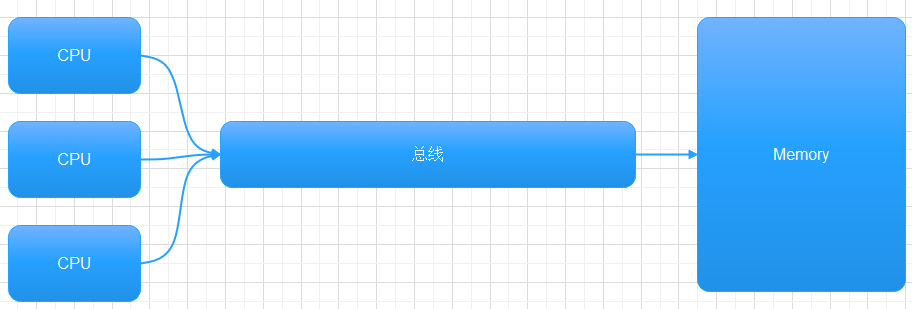

CPU存储数据是从L0到L6的层次一层层往下找的，找到了就会放到就近的缓存中，一层一层的缓存，保证高效率的读取。
从存取速度和成本来划分为L0~L6：
以上的缓存策略在多个cpu或多核中就会产生一个问题，就是相同的数据可能被读取到不同的cpu缓存中，在多线程中如果其中一个cpu修改了数据，另一个cpu却不知道，就有了数据不一致的问题。
两个线程都读取到了x，y，有一个线程修改了x，但是另外一个线程却还保持老的x的值
多线程一致性在硬件层的支持：
最单的方法是使用总线锁，当一个cpu访问数据的时候，其他cpu不能访问，这种老的cpu使用的策略有性能问题。

修的CPU使用的更巧妙的设计，不同cpu厂商使用的方法有差异，这里介绍intel cpu使用的一致性协议（MESI协议）：
cpu每个缓存行标记四种状态（额外两位）
Modified, cpu从主存中读取了一个数据x，如果这个x跟主存的数据相比更改过，则标记为Modified
Exclusive, 如果读取的数据是当前cpu独享的，则标记为EXclusive
Shared, 如果我在读的数据别的cpu也在读，标记为Shared
Invalid，如果我读到的数据，已经被别的cpu该过了，说明这个数据已经失效了，标记为Invalid
跨越多个缓存行的数据不能使用此缓存锁，所以现在cpu数据一致性使用缓存锁和总线锁一起来实现的。
什么是缓存行？
cpu在读取数据时，不是每次只读取指定的长度数据的，为了提高效率，cpu会一次性读取多个字节到缓存中，一般为64个字节，称为欢唱。
比如要读取一个int x的值，cpu可能会把x后面的一堆数据一起读进来，符合局部性和最近使用原理。
什么是伪共享？
加入有两个数据x和y，他们在同一个缓存行，在多线程中，两个cpu都读取到这个缓存行，但是第一个cpu只需要x的值，第二个cpu只需要y的值，如果第一个cpu修改了x的值，根据MESI协议，第二个cpu的缓存行失效，需要重新去主存里读取x和y的值，即使第二个cpu只需要其中y的值，这样的两个互相无关的值的改变会影响到彼此缓存行的更新，只是因为他们在同一缓存行中，被不同不同cpu锁定，称为伪共享。
伪共享会产生性能问题，可以让x和y不在同一个缓存行来提高性能：
在同一个缓存行测试：
1
2
3
4
5
6
7
8
9
10
11
12
13
14
15
16
17
18
19
20
21
22
23
24
25
26
27
28
29
public class testClass {
private static class T {
public volatile long x = 0L ;
}
public static T [] arr = new T [ 2 ];
static {
arr [ 0 ]= new T ();
arr [ 1 ]= new T ();
}
public static void main ( String [] args ) throws InterruptedException {
Thread t1 = new Thread (()->{
for ( long i = 0 ; i < 1000_0000L ; i ++){
arr [ 0 ]. x = i ;
}
});
Thread t2 = new Thread (()->{
for ( long i = 0 ; i < 1000_0000L ; i ++){
arr [ 1 ]. x = i ;
}
});
final long start = System . nanoTime ();
t1 . start ();
t2 . start ();
t1 . join ();
t2 . join ();
System . out . println (( System . nanoTime ()- start )/ 100_0000L );
}
}
这里的arr数组有2个元素，实际数据长度为两个long类型，16个字节，保证数组在一个缓存行内，我们用2个线程不停修改其中的一个值100万次，然后多次运行看看运行时间：
在机器32G内存，Intel I5 4核 配置上，时间在300左右，下面来看看不让x和y在同一个缓存行下的情形：
1
2
3
4
5
6
7
8
9
10
11
12
13
14
15
16
17
18
19
20
21
22
23
24
25
26
27
28
29
30
31
32
33
public class TestCachePadding {
private static class Padding {
public volatile long p1 , p2 , p3 , p4 , p5 , p6 , p7 ;
}
private static class T extends Padding {
public volatile long x = 0L ;
}
public static T [] arr = new T [ 2 ];
static {
arr [ 0 ]= new T ();
arr [ 1 ]= new T ();
}
public static void main ( String [] args ) throws InterruptedException {
Thread t1 = new Thread (()->{
for ( long i = 0 ; i < 1000_0000L ; i ++){
arr [ 0 ]. x = i ;
}
});
Thread t2 = new Thread (()->{
for ( long i = 0 ; i < 1000_0000L ; i ++){
arr [ 1 ]. x = i ;
}
});
final long start = System . nanoTime ();
t1 . start ();
t2 . start ();
t1 . join ();
t2 . join ();
System . out . println (( System . nanoTime ()- start )/ 100_0000L );
}
}
这里T继承Padding，T里包含8个成员，共64个字节，实际使用x成员，其他成员用来填充缓存行，arr中修改T的x成员，不会是同一个缓存行。
运行时间：70到80之间。
在开源软件disruptor中也使用了类似的技巧，他的队列环使用的游标指针会被多个线程使用，他的定义如下：
1
2
3
public long p1 , p2 , p3 , p4 , p5 , p6 , p7 ; // cache line padding
private volatile long cursor = INITIAL_CURSOR_VALUE ;
public long p8 , p9 , p10 , p11 , p12 , p13 , p14 ; // cache line padding
CPU为了提高效率，会在一条指令的执行的同时，去执行另一条指令，前提是两条指令没有依赖关系，比如下面这两个语句可能会改变顺序：
写操作也可以合并，加入cpu在计算x的值后会先写入L1,再写入L2，但是如果写入L1时缓存未命中，又需要写入L2,如果后续的指令又更改了x的值，那么这些值可以合并为最终的值一次写入L2，主要因为L2相比L1速度太慢了。
WCBuffer要比L1速度还要快，资源更贵，只有四个位置，所以当我们写入数据的时候比如更新一组数据，当这组数据长度小于4时，可以先修改完再一次性写入会提高效率。
可以想象当数组长度为6时，我们要同时写6个数据，还是分3个一组分两批写入哪个更快？
1
2
3
4
5
6
7
8
9
10
11
12
13
14
15
16
17
18
19
20
21
22
23
24
25
26
27
28
29
30
31
32
33
34
35
36
37
38
39
40
41
42
43
44
45
46
47
48
49
50
51
52
53
public class WriteCombining {
private static final int ITERATIONS = Integer . MAX_VALUE ;
private static final int ITEMS = 1 << 24 ;
private static final int MASK = ITEMS - 1 ;
private static final byte [] arrayA = new byte [ ITEMS ];
private static final byte [] arrayB = new byte [ ITEMS ];
private static final byte [] arrayC = new byte [ ITEMS ];
private static final byte [] arrayD = new byte [ ITEMS ];
private static final byte [] arrayE = new byte [ ITEMS ];
private static final byte [] arrayF = new byte [ ITEMS ];
public static void main ( String [] args ) {
for ( int i = 1 ; i <= 3 ; i ++) {
System . out . println ( i + " SingleLoop duration (ns)=" + runCaseOne ());
System . out . println ( i + " SplitLoop duration (ns)=" + runCaseTwo ());
}
}
public static long runCaseOne (){
long start = System . nanoTime ();
int i = ITERATIONS ;
while (-- i != 0 ){
int slot = i & MASK ;
byte b = ( byte ) i ;
arrayA [ slot ]= b ;
arrayB [ slot ]= b ;
arrayC [ slot ]= b ;
arrayD [ slot ]= b ;
arrayE [ slot ]= b ;
arrayF [ slot ]= b ;
}
return System . nanoTime ()- start ;
}
public static long runCaseTwo (){
long start = System . nanoTime ();
int i = ITERATIONS ;
while (-- i != 0 ){
int slot = i & MASK ;
byte b = ( byte ) i ;
arrayA [ slot ]= b ;
arrayB [ slot ]= b ;
arrayC [ slot ]= b ;
}
i = ITERATIONS ;
while (-- i != 0 ){
int slot = i & MASK ;
byte b = ( byte ) i ;
arrayD [ slot ]= b ;
arrayE [ slot ]= b ;
arrayF [ slot ]= b ;
}
return System . nanoTime ()- start ;
}
}
测试结果（本机配置32G内存，Intel I5 4核）：
1
2
3
4
5
6
1 SingleLoop duration (ns)=6261197700
1 SplitLoop duration (ns)=5340919200
2 SingleLoop duration (ns)=6344633300
2 SplitLoop duration (ns)=5953433400
3 SingleLoop duration (ns)=6653565700
3 SplitLoop duration (ns)=6509139200
如果机器配置再高点，差异应该更大。
volatile实现
字节码层面,通过加入ACC_VOLATILE修饰符让JVM去识别
1
2
3
public class TestVolatile {
volatile int x ;
}
JVM层面,volatile内存区的读写都加屏障
1
2
3
StoreStoreBarrier
volatile写操作
StoreLoadBarrier
1
2
3
LoadLoadBarrier
volatile读操作
LoadStoreBarrier
OS硬件层面
windows层面lock指令实现
synchronized实现
字节码层面
通过monitorenter 和 monitorexit
两条monitorexit,第二个是异常退出
CPU内存屏障 X86
Intel cpu内存屏障指令：
sfence，写屏障，表明在sfence指令前的写操作必须在sfence指令后的写操作前完成。
lfence，读屏障，表明在lfence指令前的读操作必须在lfence指令后的读操作前完成。
mfence， 读写屏障，表明在mfence指令前的读写操作必须在mfence指令后的读写操作前完成。
JVM级别规范
LoadLoad屏障
StoreStore屏障
LoadStore屏障
StoreLoad屏障
class loading
class linking(verification,preparation,resolution)
class initializing
申请对象内存
成员变量赋初始值
调用构造方法
成员变量顺序赋初始值
执行构造方法语句
查看JVM配置：
1
2
3
4
5
C: \Users\Thunk >java -XX:+PrintCommandLineFlags -version
-XX:G1ConcRefinementThreads=8 -XX:GCDrainStackTargetSize=64 -XX:InitialHeapSize=533161984 -XX:MaxHeapSize=8530591744 -XX:+PrintCommandLineFlags -XX:ReservedCodeCacheSize=251658240 -XX:+SegmentedCodeCache -XX:+UseCompressedClassPointers -XX:+UseCompressedOops -XX:+UseG1GC -XX:-UseLargePagesIndividualAllocation
java version "12.0.2" 2019-07-16
Java(TM) SE Runtime Environment (build 12.0.2+10)
Java HotSpot(TM) 64-Bit Server VM (build 12.0.2+10, mixed mode, sharing)
MaxHeapSize 最大堆大小
InitialHeapSize 初始堆大小
UseCompressedClassPointers 开启压缩头指针，开启后大小为4个字节，不开启为8个字节
对象头，Hotspot中称为markword，8个字节
ClassPointer指针，指向Class类型的指针，表明对象的类型，开启-XX:UseCompessedClassPointers为4字节，不开起为8个字节
实例数据
引用类型： -XX:UseCompressedOops为4字节，不开启为8字节
值类型，分配对应大小内存
Padding对齐，cpu读取数据按块来读取，如果不够8的倍数会使用对齐来填充到8的倍数
对象头
ClassPointer指针
数组长度，4个字节
数组数据
Padding对齐
markword的结构定义在markOop.hpp文件：
32位机器markword的结构
对象头信息根据对象的锁状态，分配不同的信息
分代年龄只有4位，所以这是为什么GC年龄默认为15，因为最大是15
hashCode在无锁状态下是System.identityHashCode,如果重写过hashCode，则hashCode不放在这里
一个对象计算过identityHashCode之后,不能进入偏向锁状态
句柄池
相当有间接指针，想象T t= new T(); t是怎么找到new出的T对象的呢，他通过两个指针找到，其中一个指针指向对象，一个指针指向T.class
这种方式引用对象需要查找两次，但是垃圾回收效率高
直接指针
t直接指向对象，对象里包好T.class指针，一次查找效率高。